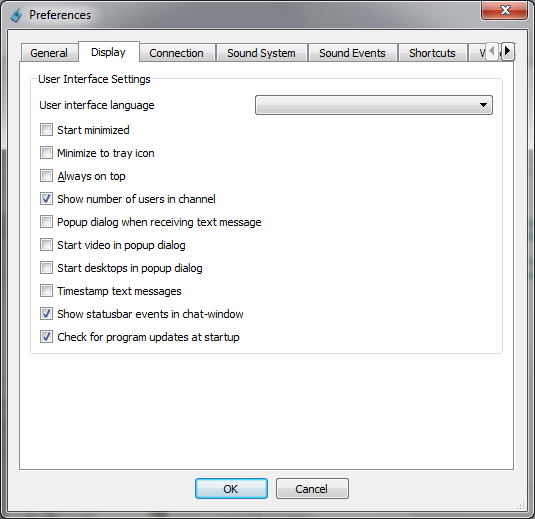
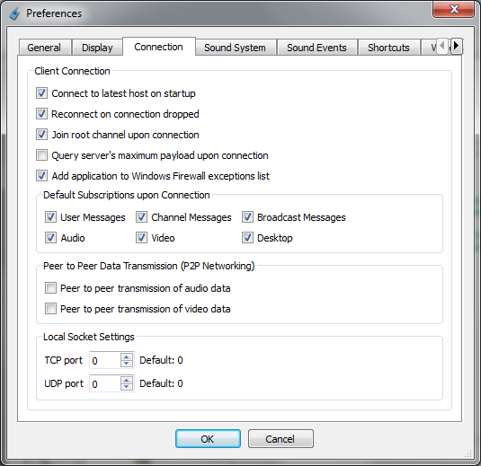
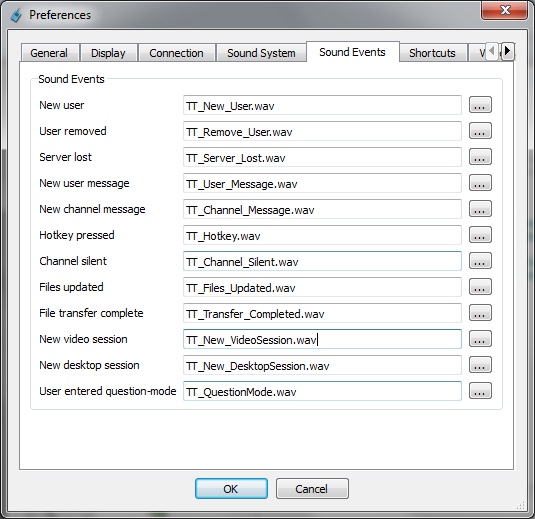
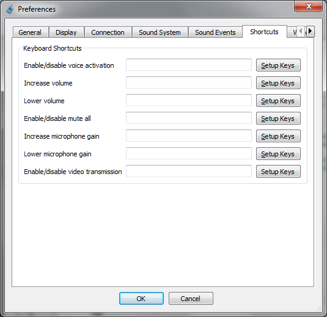

Each of the above tabs
are explained in the following sections.
General-tab
The General tab is for basic
settings like nickname and how
to transmit audio.
The items in the General-tab are explained here:
Nickname
The name other users will see as you when logging on to a
server.
Gender
This option selects whether other users should see you as
a Male or Female.
Set away status after...
If non-zero this option will automatically set you as
away after the specified number of seconds.
Push To Talk
A so-called Push To Talk key combination can be set up so
one has to hold down a set of keys in order to transmit audio
data.
This is especially useful to avoid echos from speakers.
Voice activated
Instead of using a Push To Talk key combination
one can
simply have TeamTalk start transmitting whenever you're
talking by
enabling this option.
Display-tab
The Display tab contains settings about the
application's appearance.

The items in the Display-tab are explained here:
User interface language
The language to use in the application.
Start minimized
If enabled TeamTalk will minimized itself once it starts.
Minimize to tray icon
If enabled TeamTalk will go in Windows system tray when
minimized. The system tray is in the bottom right corner of
Windows.
Always on top
If enabled TeamTalk will always be in front of other
running programs.
Show number of users in channel
If enabled a parentesis will be shown on each channel
with the number of users in the channel.
Popup dialog when receiving text message
If enabled a dialog window will pop up if someone writes
you a text message.
Start video in popup dialog
When a user starts transmitting video (from webcam) to the
video session should be displayed in a separate dialog instead
of in
the Video-tab.
Start desktops in popup dialog
When a user shares a desktop window it should be displayed
in a
separate dialog instead of the Desktop-tab.
Timestamp text messages
If enabled each text message will have a timestamp
telling when it was received.
Show statusbar events in chat-window
If enabled all messages which are shown in the
application's statusbar will also be put in the channel Chat-tab window.
Check for program updates at start up
When TeamTalk starts it should check to see if there's a new
version available. If a new version is available a text
message will be
shown in the Chat-tab.
Connection-tab
The Connection tab is used for configuring
how the client should connect to a server.

The items in the Connection-tab are explained here:
Connect to latest host on startup
If enabled the server which TeamTalk was connected to
last it was running will be used again when TeamTalk starts.
Reconnect on connection dropped
If the connection to a server is lost TeamTalk should
automatically reconnect to the server.
Join root channel upon connection
If enabled TeamTalk will automatically join the root
channel on the server after authentication.
Query server's maximum payload upon connection
Some networks restrict the size of UDP-packets which can
make
cause audio, video and desktop sessions not to work properly.
Enabling
this option will make TeamTalk query the maximum size the
server allows
for UDP-packets. TeamTalk accomplish this by sending several
"bogus"
UDP-packets with different sizes to the server in order to
figure out
how big UDP-packets are allowed.
Add application to Windows Firewall exception list
The Windows Firewall by default does not allow applications
to
receive data from unknown clients. This can cause TeamTalk not
being
able to communicate properly with server and other clients
when using
P2P mode. It is therefore recommended to add TeamTalk to the
Windows
Firewall exception list.
Default Subscriptions upon Connection
User Messages
By disabling this option all text message sent to you will
be
ignored unless you explicitly subscribe to User Messages
from a
user in the Subscriptions-menu.
Channel Messages
By disabling this option all channel text message will be
ignored unless you explicitly subscribe to Channel
Messages
from a user in the Subscriptions-menu.
Broadcast Messages
By disabling this option all broadcast text message will
be
ignored unless you explicitly subscribe to Broadcast
Messages
from a user in the Subscriptions-menu.
Audio
By disabling this option all audio will be ignored unless
you
explicitly subscribe to Audio from a user in the Subscriptions-menu.
Video
By disabling this option all video will be ignored unless
you
explicitly subscribe to Video from a user in the Subscriptions-menu.
Desktop
By disabling this option all shared desktops will be
ignored
unless you explicitly subscribe to Desktop from a
user in the Subscriptions-menu.
Peer to peer transmission of audio data
By default TeamTalk forwards audio data through the
server which will then broadcast the data on behalf of you.
Enabling
peer to peer transmission will, however, make TeamTalk send
data
directly to other users in your channel. This requires more
bandwidth
but will reduce latency since data doesn't have to go through
the
server.
Peer to peer transmission of video data
The idea here is the same as for audio data. Note,
however, that video transmission requires a lot of bandwidth,
so change
the Video Capture settings
accordingly.
TCP port
The socket used for TCP should bind to the specified
port. Do not change unless you know what you're doing.
UDP port
The socket used for UDP should bind to the specified
port. Do not change unless you know what you're doing.
Sound System-tab
The Sound System tab is for
configuring your audio recording and playback devices.
The items in the Sound System-tab are explained here:
Windows Audio Session
The preferred sound system for Windows Vista/7. It's very
fast and works well with echo cancellation.
DirectSound
This is the preferred sound system to use on Windows XP.
Windows Standard
Windows default sound system. This typically is slower
than DirectSound and Windows Audio Session.
ALSA
This sound system is only available on Linux.
Input Device
The sound device to use for recording audio. It is advised
to use one which supports stereo, i.e. label below should say
Max Input
Channels 2.
Output Device
The sound device to use for audio playback. It is advised
to use one which supports stereo, i.e. label below should say
Max
Output Channels 2.
Test Selected
Use this to test the selected sound devices.
Enable duplex mode (required for echo cancellation)
When this option is enabled all received audio is merged
into a
single stream and played. Sound cards which cannot option
multiple
streams can use this option and if you intend to use echo
cancellation
this option is a requirement.
Enable echo cancellation (remove echo from speakers)
If you're using speakers instead of headphones when other
users
may be hearing themselves due to echo from speakers. Enabling
this
option will remove the echo from speakers. It, however,
requires a lot
of system resources and is therefore not enabled by default.
For best
echo cancellation it's also advised to enable the Audio Configuration
option
when creating
channels.
Enable 3D-sound
If enabled TeamTalk will place users who are talking in
either the left or right speaker.
Enable denoising
If you have a poor quality microphone it is advised to
enable denoising.
Sound Events-tab
The Sound Events tab is for playing
sound when certain events take place.

The items in the Sound Events-tab are explained here:
New user
Play this sound when a new user joins your channel.
Remove user
Play this sound when a user leaves your channel.
Server lost
Play this sound if TeamTalk drops its connection to the
server.
New user message
Play this sound when a user to user text message is
received.
New channel message
Play this sound when a channel text message is received.
Hotkey pressed
Play this sound when the Push to Talk key combination is
pressed.
Channel silent
Play this sound when the last user has stopped talking
and there's no one left who is talking in the channel.
Files updated
Play this sound when a file is either added or deleted.
File transfer complete
Play this sound when a file transfer is completed.
New video session
Play this sound when a new video stream can be seen in the Video-tab.
New desktop session
Play this sound when a new shared desktop can be seen in the
Desktops-tab.
User entered question-mode
Play this sound if a user in your channel changes
status to Question-mode.
Shortcuts-tab
The Shortcuts tab is for keyboard
shortcuts (hotkey) for common tasks.

The items in the Shortcuts-tab are explained here:
Enable/disable voice activation
Global hotkey to turn on/off voice activation.
Increase volume
Global hotkey to increase the master volume.
Lower volume
Global hotkey to lower the master volume.
Enable/disable mute all
Global hotkey to mute all users.
Increase microphone gain
Global hotkey to increase the microphone volume.
Lower microphone gain
Global hotkey to low the microphone volume.
Enable/disable video transmission
Global hotkey to turn on/off video transmission.
Video Capture-tab
The Video Capture tab is for
configuring web camera for video recording.
The items in the Video Capture-tab are explained here:
Video Capture Device
The web camera to use for capturing video.
Video Resolution
The video resolution to use and the frame rate (FPS).
Image Format
The image format to use. Use RGB32 to get the
best picture quality and I420 for the highest frame
rate.
Test Selected
Test the selected video capture settings. Note the video
codec settings are not used when testing this.
Codec
The video codec to use for compressing the video data.
Quality
The quality which the video encoder should use. Increasing
this
value will give better picture quality but at the same time
require
more processing time for each video
frame and will also increase the bandwidth usage.
Bit Rate
The bit rate the video encoder should target. It is
recommended
to set this value to zero which will enable variable bitrate
(VBR).
Otherwise the video codec will use constant bitrate (CBR). The
higher
the value, the higher the bandwidth usage. Read the Quick Start section
on how to
configure the settings which are best for your Internet
connection.